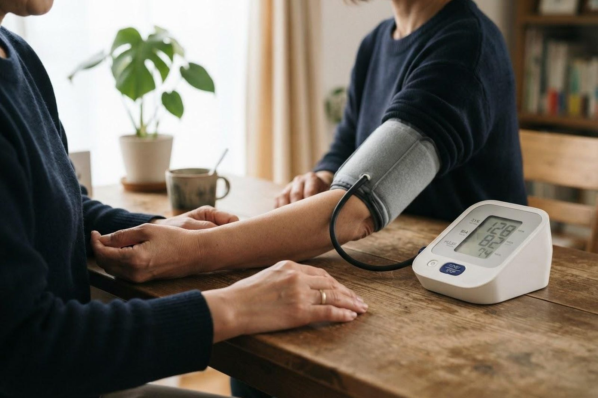

健診で血圧が高いと言われました。すぐに薬を飲まないといけませんか？
A. 回答健診で一度高い値が出たからといって、すぐにお薬が始まるわけではありません。一般的には、まずご自宅で毎日血圧を測る「家庭血圧」で本当に高い状態が続いているのかを確かめ、あわせて塩分・体重・運動・お酒・たばこといった生活習慣を見直すところから始めるのが標準的な進め方とされています。日本高血圧学会のガイドラインでは、診察室で測った血圧が140/90mmHg以上、ご家庭で測った血圧が135/85mmHg以上を高血圧の目安としています。お薬を使うかどうかは、血圧の高さに加えて、糖尿病や腎臓の病気などほかの持病、年齢、喫煙などの要素をあわせて考えていきます。血圧のご相談は内科・循環器内科が窓口です。

血圧が高くなる一般的な背景
血圧が高い状態にはさまざまな背景があり、原因がはっきりしないものが大半とされています。
- 本態性高血圧：はっきりした原因の病気がないのに血圧が高くなるもので、高血圧の大部分を占めるとされています。体質（遺伝的な要素）に、塩分のとりすぎ・体重増加・運動不足・飲酒・ストレス・加齢などが重なって起こると考えられています。
- 塩分のとりすぎ：日本の食生活は麺類の汁、漬物、練り物、加工食品などから塩分をとりやすく、血圧が上がる一因になるとされています。
- 肥満・体重増加：体重が増えると血圧も上がりやすくなる傾向があり、減量によって血圧が下がることが期待できるとされています。
- 睡眠時無呼吸や飲酒・喫煙：いびきや睡眠中の呼吸の止まり、習慣的な飲酒、喫煙が血圧に影響している場合があります。
- 二次性高血圧：ホルモンの病気や腎臓の病気、一部のお薬の影響などで血圧が高くなっているケースです。頻度は多くありませんが、若い方の高血圧や、急に血圧が高くなった場合には検査で確認することがあります。
なお、診察室では高いのにご自宅では正常な「白衣（はくい）高血圧」や、逆に診察室では正常なのに自宅や早朝に高い「仮面高血圧」もあります。家庭血圧を測っていただくと、こうした違いを見分ける助けになります。
家庭血圧の正しい測り方
治療を始めるかどうかの判断でも、その後の管理でも、家庭血圧はとても重要な情報になります。以下のように、毎日同じ条件で測っていただくのがポイントです。
- 朝：起床後1時間以内に、トイレを済ませてから、朝食前・お薬を飲む前に測ります。
- 晩：就寝前に測ります。入浴や飲酒の直後は避けてください。
- 姿勢：静かな部屋で背もたれのある椅子に座り、足は組まずに床につけます。1〜2分ほど安静にしてから測り、測定中は会話をしないようにします。
- カフの位置：カフ（腕帯）の中心が心臓の高さに来るようにします。上腕で測るタイプの機器が一般的にすすめられています。
- 回数と記録：1回の機会に2回測って平均をとるのが理想とされています。高い値だけを選ばず、測ったものはそのまま記録してください。
- 評価のしかた：1日だけの値ではなく、1週間ほどの平均で判断します。受診の際に記録をお持ちいただくと、より的確なご相談ができます。
まず取り組みたい生活習慣の見直し
日本高血圧学会のガイドラインでは、生活習慣の修正項目として次のような内容が挙げられています。お薬を使う場合でも、これらは治療の土台として続けていくことがすすめられています。
- 減塩：1日6g未満が目標とされています。汁物を残す、麺類の汁を飲みきらない、卓上の調味料を控えるなど、続けやすいところから始めます。
- 野菜・果物と脂質：野菜や果物を積極的にとり、コレステロールや飽和脂肪酸のとりすぎを控えることがすすめられています（腎臓の病気や糖尿病がある方は、量について医師にご相談ください）。
- 適正体重：BMI25未満の維持が目安とされています。
- 運動：ウォーキングなどの有酸素運動を、無理のない範囲で毎日30分程度、または週180分以上を目安に続けることがすすめられています。
- 節酒・禁煙：飲酒量を控えること、たばこをやめること（受動喫煙を避けることも含みます）がすすめられています。
受診の目安
血圧は自覚症状が出にくく、「症状がないから大丈夫」とは言えないのが難しいところです。以下を目安にしてください。
判断に迷われるときは、救急安心センター事業「＃7119」（岡山県内で利用できます）にご相談いただけます。総務省消防庁の「全国版救急受診アプリ（Q助）」も目安になります。
すぐに受診を検討してください
- 血圧が高いときに次のような症状を伴う場合は、来院よりも先に救急要請（119番）をご検討ください。迷われる場合は、救急安心センター事業「#7119」（つながらない場合は086-222-7119）で相談員に判断を仰ぐことができます。
- 強い頭痛、吐き気・嘔吐、意識がもうろうとする、けいれんがある
- ろれつが回らない、手足に力が入らない、顔や手足の片側がしびれる（脳卒中を疑うサインとされています）
- 激しい胸の痛みや背中の痛み、強い息苦しさ、横になると息が苦しい
- 急に目が見えにくくなった
- 血圧が著しく高い値（おおむね180/120mmHg以上）で、上記のような症状を伴う
早めの受診をおすすめします
- 健診で血圧が高いと指摘された、または「要精査」「要受診」と記載があった
- 家庭血圧の平均が135/85mmHgを超える日が1〜2週間続いている
- 症状はないが、血圧が160/100mmHg前後かそれ以上の値が続いている
- 糖尿病・脂質異常症・腎臓の病気・心臓の病気があり、血圧も高いと言われた
- ご家族に高血圧や脳卒中・心臓の病気の方がいる
- いびきや睡眠中の呼吸の止まりを指摘されている、または日中の強い眠気がある
- 以前に血圧のお薬を飲んでいたが、自己判断で中断している
- 足のむくみや、以前より階段で息が切れるようになったなど、体の変化が出てきた
当院での対応
いなだ医院は内科・循環器内科を標榜しており、高血圧をはじめとする生活習慣病の管理を日常的に行っています。まずは診察室での血圧測定に加え、ご自宅で測っていただいた家庭血圧の記録を拝見しながら、本当に治療が必要な状態かどうかを一緒に確認します。必要に応じて、血液検査・尿検査・心電図などで、血圧以外の危険因子や心臓・腎臓への影響、二次性高血圧の可能性についても確認していきます。
そのうえで、減塩や体重・運動といった生活習慣の見直しをどこから始めるかをご相談し、生活習慣の改善だけでは十分でない場合や、血圧の値・合併症の状況からお薬による治療が望ましいと考えられる場合には、内容をご説明したうえで開始をご提案します。血圧は長くつき合っていくものですので、かかりつけ医として定期的に経過を確認し、季節による変動や体調の変化、ほかの持病とのバランスもふまえて継続的にご相談いただけます。血圧計をお持ちでない方や、測り方に自信がない方も、遠慮なくお声かけください。当院は朝7時から診療しており、お仕事前の受診にもご利用いただけます。
受診時に伝えていただきたいこと
- いつ血圧が高いと言われたか（健診結果や過去の記録があればお持ちください）
- 家庭血圧の記録（朝・晩の値と測った時間帯。手帳やアプリのままで構いません）
- 現在飲んでいるお薬・サプリメント（お薬手帳をお持ちください）
- ほかに治療中の病気、これまでにかかった病気
- ご家族に高血圧・脳卒中・心臓の病気の方がいるか
- お酒・たばこの習慣、普段の食事や運動の様子、いびきや日中の眠気の有無
参考にした情報
健診で血圧を指摘された方、家庭血圧の測り方や記録の見方が気になる方は、お気軽にご相談ください。
最終更新：2026年8月26日